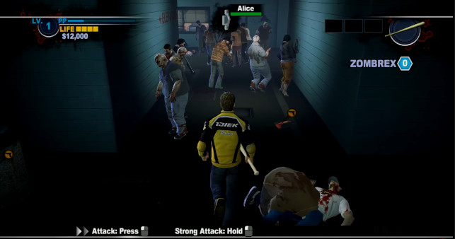

Gaming Life
Nintendo 64
I started playing games from a very young age. My older sister had a Nintendo 64 which I would frequently play (and still occassionally do!). My earliest memories
of playing games was in my old house playing games likes;
Banjo-Kazooie,
Donkey Kong 64,
007 Goldeneye,
Mario Kart 64,
Yoshi's Story & also
F1 Grand Prix.
I really loved playing these games as a kid and honestly they have definitely shaped the way that I play games today. Since my two favourites, BK and DK64 , are considered to be Collect-a-thons,
I grew a love (or maybe it's an obsession) for collecting 100% of items in levels and games.
Completing these games to their fullest has transpired to me enjoying getting 100% completion in video games today! I have 55+ Platinum Trophies and counting on my Playstation account
from a wide variety of genres, from fps, to horror, to suvival games, strategy and more. I love getting all that I can from a game and I am more than happy playing through games multiple
times to get 100%.
Favourite Games:
Banjo-Kazooie Donkey Kong 64
Playstation 2
After a couple of years I got a Playstation 2 and this opened me up to a larger variety of game genres for me
to try and experiment to see what I liked! I was introduced to Stealth games, Fighting games and also Rhythym
games, all of which further reinforced my inner completionist/perfectionist as a child. Replaying stealth sections
to do them flawlessly and get better ratings, trying to learn combos to Perfect an enemy in fighting games and
aiming for 100% accuracy in rhythym games. I played games such as;
Tom Clancy's Splinter Cell,
James Bond 007 series,
Tekken 4,
& Guitar Hero III: Legends of Rock.
I also continued to play and develop interest in game genres that I played on the N64, those being
FPS, Platformer and Racing with games such as;
Crash Bandicoot: Wrath of Cortex,
The Simpsons: Hit & Run,
Teenage Mutant Ninja Turtles &
the Need For Speed series.
To this day I still occassionally go and play some Need For Speed, it's become a cathartic game for me to
relax and destress if I ever need to.
Favourite Games:

Need For Speed: Most Wanted (2005) The Simpsons: Hit & Run
Playstation 3
I have a lot of great memories playing games on my PS3 and I have a lot of nostalgia for quite a few games from it's lifecycle, some of them being; Call of Duty: World at War,
Alien vs. Predator, Far Cry 3, Assassins Creed II,
Need For Speed: Shift and also the entire Batman Arkham series. This was the era where I began trying to achieve Platinum Trophies in games and it's something that I
still enjoy doing to this day.
However, I completely fell in love with the side mode "Nazi Zombies" in Call of Duty's World at War. Up until this point, nothing had shocked me more than finishing
my first Call of Duty campaign, skipping the credits to go play multiplayer, but finding myself watching a cutscene of a burning plane and zombies running at the screen, being totally freaked out and
spawning into a claustrophobic destroyed building with barriers over a handful of windows having to kill zombies and try and defend myself from them.
It was my first experience with something properly
scary that I actually enjoyed and I found myself stumbling upon more of these moments as time went on.
From this new obsession I had found, I ended up playing a multitude of zombie games after this, games like; Dead Island, Dead Rising 2, The Last of Us,
Dying Light, Zombie Army Trilogy and a few others. Zombies games became my favourite type of game to play and one of my favourite genres of media to consume, with shows
like The Walking Dead popping up as Zombies became mainstream in the early 2010's.
With my love for the zombies mode, I fell into the Call of Duty cycle. I played yearly up until 2019 where I stopped because of how different
Cold War's Zombies mode felt from previous iterations. I could honestly go on a rant for days about the mode so I'll keep it simple by saying that it was the first
Treyarch zombies that I didn't love. Zombies was a lot of the reason I even still played Call of Duty and after so many years
I felt that it had lost all of it's identity and had finally lost the last piece of what made me love the mode in the beginning. Zombies had become like the Ship of Theseus to me.
I have a lot of fond memories playing these games over the years and I met a lot of friends through them too, a handful that I still keep up to date with now.
Favourite Games:
Call of Duty: World at War The Last of Us
Playstation 4
When I moved onto the PS4, I began to branch out a bit more, especially since having grown in fondness for horror by this point. Today I have around 17 Resident Evil games,
including originals & remakes. I have played through most of the mainline ones, I still have a couple of the older ones to play through. But I have loved trying to achieve platinum in these games,
it's something that I really enjoy doing. Since getting into Resident Evil, I grew a strong love for the Survival-Horror genre, playing games like Alien: Isolation,
The Evil Within, Dead Space and most recently trying out the Metro series, (I am dying to play Silent Hill though).
There's something I find really addicting about survival horror and I don't know if I could explain it, for some reason I enjoy the replay value and find myself trying to 100% these types of games
more than other genres.
As well as Survival Horror, I also played a lot of horror games in general, with some of the more memorable ones being;
Outlast, Until Dawn, SOMA, Amnesia: The Dark Descent, Slender: The Arrival, Monstrum & Layers of Fear.
The list goes on and on, but this is where I became totally obsessed with the genre and I still am to this day.
Most recently, in the past 2 years, I have been going through both the Soulsborne Series and also the DOOM series, as well as any new Resident Evil title that came out as
well as picking up any older titles if I was able to, during this time. I have achieved Platinum Trophy in every Souls game except for Demon Souls and I am working my way through my DOOM collection also!
One of my biggest recent gaming achievements in recent history was completing The Evil Within on AKUMU difficulty, which means the enemy layout has been changed and there is also an increase of enemies per area as well as
more difficult enemies appearing much earlier in the game & finally one hit from any enemy and you die.
As well as delving into some new types of games, I also continued to explore playing in genres more familiar to myself, with games series like Uncharted & Need For Speed, games such as
Batman Arkham Knight as well as also trying some new series with Bioshock, God of War, Dead By Daylight, Hunt: Showdown & Grand Theft Auto V.
After continuing to play some fighting games on the PS3, those being Injustice: Gods Among Us & Mortal Kombat, I revisted Tekken 7 and played
Injustice 2 & also Mortal Kombat X on the PS4 as well as trying a new style of fighting game with For Honor.
Favourite Games:

Resident Evil: Biohazard Bloodborne The Evil Within
PC
In the past 2 or 3 years, I also finally got myself a PC and was able to open myself to some games that I had been dying to play for a long, long time. I couldn't tell you how many Left 4 Dead 1 & 2 videos I had
watched over the years, but I can promise you I played it to death when I got access to it. On top of this, I also took advantage of having access to the large number of horror games on Steam and also on
Itch.io, trying a mix of both single player and coop games.
Just to name a few; Amnesia: The Bunker, Devour, Phasmaphobia, Cry of Fear, Fears to Fathom, The Other Side, Haunted PS1 Demo Disc,
The Outlast Trials & Lethal Company.
As well as playing a lot of Horror games, I also have played a large number of Survival games, there's something almost therapuetic about them, I feel like I almost have one Survival game for each theme/genre. With 7 Days to Die
for horror/zombies, Raft for an aquatic theme, Valheim covers Vikings and Soulslike. I really enjoy how fresh and different all of these survival games feel from each other! It's a genre I enjoy going back
to every so often.
Right now my current addiction is Valorant, I have played it on and off for around 2 years now. While I have always really enjoyed competitive games, Overwatch, Rainbow 6: Seige, Rocket League
and more, I'd noramlly sit around Gold/Plat in these games, with Diamond 2 in Rocket League being my highest rank. I'm currently in my peak of Ascendant 2 in Valorant and currently still in the process of climbing passed my peak rank, I have
come a long way with Valorant being my first competitive shooter on pc, when I started I was placed in Iron 3.
What I find really fun about Valorant is that no two matches ever play the same, with the large agent pool and variety of different team compositions, every game always feels fresh. Since, compared to a lot of players, my mechanical skills on PC
are still fairly basic as I spent my entire life playing on console, I am having to resort to playing smarter rather than playing better with Valorant, relying on the use of abilities to try and outplay opponents. I really enjoy trying to
strategise on the fly and also trying to analyse the enemy team to see if there's any patterns they fall into that I can use against them to win a round or two. It keeps me coming back for more.
Favourite Games:

Left 4 Dead 2 Valheim Valorant
Horror
I honestly cannot believe how obsessed I am with horror as I am today considering how terrified of it all I used to be. I’m not sure when it changed, whether it was slowly being exposed to horror
elements in the video games with such things as Nazi Zombies, through watching Pewdiepie around 2010, or perhaps a little earlier with watching shows like Dr Who as a child, as funny as that may sound,
I stand by my point because the Weeping Angels were absolutely terrifying and still are. Regardless at some point something began to change, coincidence or not, and I started to develop a love for horror
games and movies slowly over the years.
I remember the remake of Friday the 13th being the first horror movie I ever watched. I was almost sort of goaded into watching it by my parents since it was on the TV at some point when I was passing by the
living room. while it totally freaked me out, it also gave me that pure rush of adrenaline watching it. I was hooked. After this I began watching horrors with my friends and we got really into them, we'd spend
many nights after school watching the scariest ones we could find, they're probably some of my fondest memories. Those nights led me to where I am now, totally obsessed with the genre, trying to consume as
much of it as I can.
The PS3 was the first time I was properly exposed to Horror in video games. Sure when I was younger I found a couple of things about the old N64 games a little scary, like Mad Monster Mansion in BK or Creepy
Castle in DK64, but I had never experienced proper horror by this point as I was still a good 5 or 6 years away from watching Friday the 13th for the first time.
With Call of Duty Zombies probably being a good starting point for my introduction to horror, some other games had some scary moments or aesthetics too! Batman: Arkham Asylum funnily enough was really creepy
and had an incredibly oppressive atmosphere, even though you're playing as a superhero, you never felt overly powerful, the tension built through the atmosphere and environment is probably my most fond
memory of the entire series, sadly I don't think the sequels ever quite hit the same feeling as the original, however they did improve in other aspects.
There are 4 main aspects that I love about the genre, those being;
Emotions in Horror
There is something about the way that Horror makes me feel that I can't enough of. It is fun and exciting and it makes me want to share that feeling with others through my work. There is no feeling that compares to
exploring these environments in games or movies and feeling genuine terror while playing.
My favourite horror experience came from Resident Evil 7: Biohazard in VR. I had already completed the game once or twice on normal and hard, but I decided to play Madhouse difficulty in VR for the first time. I
was blissfully unaware that this would vastly change up the enemy locations and numbers as well as moving around key items and changing the puzzles too! So for me, playing Madhouse in VR felt like playing the game for
the first time all over again! The genuine fear I had during that play through was exhilarating and I loved every second of it. I would die to play it again for the first time.
Resident Evil 7: Biohazard - VR
I would be overjoyed if I scare someone half as much as I was playing RE7 in VR but, I would be complete if I could replicate that feeling. The paranoia that I felt for the next few days was insane, I
felt like I had to check over my shoulder to make sure that there wasn't
Sound in Horror
I honestly find the way that sound can impact the feeling in games incredible. There are numerous occasions, where I still perfectly hear a moment in a game, even though its been like 10 years since i've played it.
Through sound alone my reaction and feelings from the time I played seem to be cemented in my brain forever.
The introduction sequence to Dead Rising 2 has never left me. After emerging from a broken down elevator, the Player steps out into pure chaos. Drowning in the large wave of groans
that was eminating from the surrounding hordes of zombies combined with the echoing screams of the few remaining survivors and also this very distanct deep klaxon alarm that was slowly blaring in the background haunted me.
This was the most impactful moment of sound in a video game for me, it's a core memory for me, I will never forget it. I am not kidding I think it took 10 year old wasn't able to play the game for a long while
because of how stressful the intro felt. I had to come back to the game a few months later when I felt a bit braver and the initial feelings of fear had subsided.

Dead Rising 2 - Introduction Alien vs. Predator - Marine Campaign
The next and perhaps most memorable one was in Aliens Vs. Predator, the first mission in the Marine campagin was one of the most terrifying experiences I have ever had with gaming,
it doesn't take much effort for me to remember how it felt to play that level. The quiet groaning of the metal environment, the scuttling in the vents, the rapid beeping of the motion detector, the
Xenomorph's visceral screams and the heavy rain of gunfire, it all came together and was utterly petrifying, it took me a lot of attempts to get through that first level and it's now ingrained into my memory. The
pacing and tension of that first level was perfection, I do not remember anything else about that Marine campaign, not a location or place stands out, but if you asked me right now I could talk you through
that entire first level through memory alone.
Pacing and Tension
When it comes to maintaining audience retention in most medias, it is suggested that the pleasure felt while participating in watching or playing relies on a manichean factor. When the pacing
alternates between the extremely intense and the extremely quiet people's engagement will improve. Not only will the stark differences between the intense and
the quiet keep interest and engagement high, it will also make the intense moments feel so much more intense as people will compare it to the moments of quiet they had just moments before. Creating an
even more satisfying payoff.
This leads to the cycle of tension and release, which is a part of what I absolutely adore about horror games, there is something about them that I consistently find myself
immersed by them. Starting off with very slow and careful build up, typically during these sequences I'll find myself taking in the environment around me, understanding what may have happened in the world I am playing in and slowly exploring my
way through it, descending slowly into a more uneasy feeling with every step.
Outlast - Night Vision Section
One of the most notible games that, to me, felt very successful in this cycle, was Outlast. I think I was 14 when it came out on Playstation 4 and from start to finish that game had me hooked. I couldn't
put it down for a second! It perfectly balanced, walking around taking things in, to sneaking around very carefully trying not to be caught followed by some very intense chase sequences as well. All while trying to
complete certain objectives to progress through the game. I did quite a lot of playthroughs of this game, trying to beat it on harder difficulties and I think I was in a perpetual state of stress throughout.
Problem Solving
As I consumed more horror media I began to notice my growing interest in the problem solving aspect that comes with horror. I will never not sit through a slasher film, such as Scream, and not be
trying to work out who the killer is the entire time. I absolutely love problem solving, there's something really fun about trying to figure things out. Watching films like Saw and working out how
to beat the traps as well as trying to figure what the overall goal and intention of Jigsaw was in each movie. This goes for any movie with an aspect of mystery, I love trying to figure out the twists before they
happen.
The interest goes further than just with movies, I really enjoy puzzles in games, from complex to simple I always enjoy them, I think Resident Evil does well in creating interesting puzzles, I
especially like when the environment is included in the solution! Even most Survival Horror games gameplay loop can require a lot of strategic planning, as typically resources are very limited in these
types of games, so you have to manage them effiecently.
Resident Evil 2: Remake - Medallion Puzzle
I find a lot of enjoyment from these aspects of horror media, video games and anything else that will allow me to use critical thinking in the moment. I tend to surround myself with things that
give me the opportunity to digest lots of information quickly and processing it in order to reach the correct solution. It is part of the reason I love Modelling and Coding so
much as I will find myself applying my critical thinking when I am doing these things.
Music
Music is a huge part of my life. Whether I am working, playing games, cooking, or out and about, I will almost always be listening
to music at anypoint in the day. Some of my top artists that I currently like;
Istasha,
Sayk_,
Highly Suspect,
Nothing But Theives,
HAARPER,
Faceless 1-7,
do not resurrect &
Kuma the Third.
The above playlist is ordered alphabetically, by artist, and can only display 100 songs so I have tried to keep it to 1 song per artist, excluding collaborations. So it might not be exactly what I am listening
to right now as my taste frequently and subtly shifts, but it will help encapsulate a part of the wide variety that I have.
With just under 3K songs saved that I cycle through regularly, I have quite a mix of genres, according to Spotify I listen to;
Horrorcore,
Dark Trap,
Rock,
Nu Metal,
Indie
Folk & Acoustic,
J-Pop &
more!
While I am working on projects that are horror related, I have found myself listening to horror related music or creepy soundtracks while I do so, as I find them really effective as they generate that uneasey feeling
that I get while watching or playing horror games and I use this feeling and channel it into my work. I feel that emotions within the horror genre are vital to help a game or movie be effective at instilling emotions
within their audiences.
Cooking
My relationship with Food is a lot like my relationship with Horror, I was incredibly fussy as a child with next to no interest and now I cook 5-6
nights a week for an hour or 2 (sometimes even more depending on what I am making!) and I am completely obsessed with trying new food or learning about different cultures make their foods etc.
A Collage of some recent Food I have cooked!
My love for food slowly grew as I got older, but really kicked off when I started working in Kitchens in restaurants near where I lived. Having a lot more hands-on experience with prepping and cooking food really began
to get me interested! Since then I have dozens of Youtubers that I watch to learn about cooking to this day and I am slowly building up an arsenal of Cook Books to help me learn and
explore different cultures cuisines! Food has become a very integral part of my happiness at this point and it's something that I enjoy just as much as my 3D work and another outlet for me to put passion and creativity into. I am always trying
to learn more and better myself and my skills.
Other
Dungeons & Dragons
Over the past year, a few of my friends from school and I have began playing D&D together once a week. For me it is a totally new thing, I had some basic level knowledge on gameplay from shows like
Stranger Things or Big Bang Theory
and also some understanding different of races/classes etc as I have an okay knowledge of High and Low Fantasy from video games and movies but apart from that I really didn't
know much else. So I was quickly given a brief rundown before hand and then sort of thrown into the deep end, since everyone else already knew the base mechanics and had a better understanding of how D&D works.
D&D - Playing in Combat D&D - Dice Set
One thing, however, that did play in my favour was the element of roleplaying as a character on the spot, while it took me a couple sessions to warm up to it, it's probably one of my better
skills with the game. This is down to me taking part in some school shows as well as doing some Musical Theatre and Improv between my last 3 years of school
and up until I began University.
So now that we've been playing for quite the time, I've eased into it very well and use my previous experiences with improv and acting to crack really cringe puns and jokes
throughout our sessions with 0 regrets.
Spanish
On top of all these things I am trying to learn Spanish in my free time! I currently understand Spanish at an A2 level, working my way towards B1. I think it was lockdown when I began trying to learn Spanish, just a little bit here and there using Duolingo,
but since then I have been doing my best to try and keep it up! My reason for this is that I really love Spanish and South American food and I have an interest in their cultures! Also, I have
visited Spain quite a lot and I always wish to be able to converse more when I visit. While I do find it hard sometimes to sit myself down and put time aside to practice Duolingo, I do constantly try to do
something practical with Spanish.
Arroz y Pollo de Corral La Destileria - Cocktails Playa de Lo Pagán en Murcia
I have a couple of friends from Mexico who I regularly text, we take turns switching between English and Spanish. I have met many people to converse with in Spanish using apps like Tandem.
I will also watch try to find and watch shows on Netflix in Spanish,
such as; Narcos, Narcos: Mexico, ¿Quién mató a Sara?, La Casa De Papel and a couple of others! I will also switch the language of some English
shows like Brooklyn Nine-Nine or some of my games like Resident Evil or Sekiro to Spanish if possible.
I do these things in order to keep my Reading and Listening up for spanish, because I know how quickly things a language can leave your mind if you don't interact with it often.
© All rights reserved
TLDR:
Completionist.
I aim to acheive 100% with games I love.
Scare me.
Horror-Survival is my favourite genre.
Masochistic Gamer.
The harder the game the better. Resident Evil, DOOM and Soulsborne are my 3 favourite franchises.
Infected
Obsessed with Zombies.
A Total Foodie.
I love cooking and trying new foods/cuisines!
Tabletop Games.
Once I week I play Dungeons and Dragons with some friends.
Como Estas?
También, estoy aprendiendo Español en mi tiempo libre.